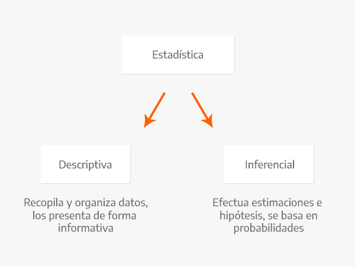

Capítulo 2 INTRODUCCIÓN A CIENCIA DE DATOS

2.1 ¿Qué es Ciencia de Datos?
2.1.1 Definiendo conceptos:
Estadistica Disciplina que recolecta, organiza, analiza e interpreta datos. Lo hace a través de una población muestral generando estadística descriptiva y estadística inferencial.
La estadística descriptiva, como su nombre lo indica, se encarga de describir datos y obtener conclusiones.
La estadística inferencial argumenta sus resultados a partir de las muestras de una población.
En la estadística descriptiva se utilizan números, como medidas, para analizar datos y llegar a conclusiones de acuerdo a ellos. Con la estadística inferencial se intenta conseguir información al utilizar un procedimiento ordenado en el manejo de los datos de la muestra.
Algunos dicen que La estadística inferencial se encarga de realizar el cálculo de la probabilidad de que algo ocurra en el futuro



- Business Intelligence: BI aprovecha el software y los servicios para transformar los datos en conocimientos prácticos que informan las decisiones empresariales estratégicas y tácticas de una organización. Las herramientas de BI acceden y analizan conjuntos de datos y presentan hallazgos analíticos en informes, resúmenes, tableros, gráficos, cuadros, -indicadores- o KPI’s y mapas para proporcionar a los usuarios inteligencia detallada sobre el estado del negocio. (BI esta enfocado en analizar la historia pasada)
¿Qué característicastiene un KPI?
- Específicos
- Continuos y periódicos
- Objetivos
- Cuantificables
- Medibles
- Realistas
- Concisos
- Coherentes
- Relevantes

- Machine Learning: El ‘machine learning’ –aprendizaje automático– es una rama de la inteligencia artificial que permite que las máquinas aprendan de los patrones existentes en los datos. Se usan métodos computacionales para aprender de datos con el fin de producir reglas para mejorar el desempeño en alguna tarea o toma de decisión. (Está enfocado en la programación de máquinas para aprender de los patrones existentes en datos principalmente estructurados y anticiparse al futuro)

Deep Learning: El aprendizaje profundo es un subcampo del aprendizaje automático que se ocupa de los algoritmos inspirados en la estructura y función del cerebro llamados redes neuronales artificiales.
En Deep Learning, un modelo de computadora aprende a realizar tareas de clasificación directamente a partir de imágenes, texto o sonido. Los modelos de aprendizaje profundo pueden lograr una precisión de vanguardia, a veces superando el rendimiento a nivel humano. Los modelos se entrenan mediante el uso de un gran conjunto de datos etiquetados y arquitecturas de redes neuronales que contienen muchas capas. (Está enfocado en la programación de máquinas para el reconocimiento de imagenes y audio (datos no estructurados))


Big data se refiere a los grandes y diversos conjuntos de información que crecen a un ritmo cada vez mayor. Abarca el volumen de información, la velocidad a la que se crea y recopila, y la variedad o alcance de los puntos de datos que se cubren. Los macrodatos a menudo provienen de la minería de datos y llegan en múltiples formatos.
Es comun que se confunda los conceptos de Big Data y Big Compute, como habiamos mencionado Big Data se refiere a el procesamiento de conjuntos de datos que son más voluminosos y complejos que los tradicionales y Big Compute a herramientas y enfoques que utilizan una gran cantidad de recursos de CPU y memoria de forma coordinada para resolver problemas que usan algoritmos muy complejos.

Curiosidad: Servidores en líquido para ser enfriados
Curiosidad 2: Centro de datos en el océano
Entonces, ¿qué NO es ciencia de datos?
- No es una tecnología
- No es una herramienta
- No es desarrollo de software
- No es Business Intelligence*
- No es Big Data*
- No es Inteligencia Artificial*
- No es (solo) machine learning
- No es (solo) deep learning
- No es (solo) visualización
- No es (solo) hacer modelos
2.2 Objetivo de la Ciencia de Datos
- Los científicos de datos analizan qué preguntas necesitan respuesta y dónde encontrar los datos relacionados. Tienen conocimiento de negocio y habilidades analíticas, así como la capacidad de extraer, limpiar y presentar datos. Las empresas utilizan científicos de datos para obtener, administrar y analizar grandes cantidades de datos no estructurados. Luego, los resultados se sintetizan y comunican a las partes interesadas clave para impulsar la toma de decisiones estratégicas en la organización.

Fuente: Blog post de Drew Conway
Más sobre Conway: Forbes 2016
2.3 ¿Qué se requiere para hacer Ciencia de Datos?
Background científico
- Conocimientos generales de probabilidad, estadística, álgebra lineal, cálculo, geometría análitica, programación, conocimientos computacionales… etc
Datos
- Relevancia y suficiencia
Es indispensable saber si los datos con los que se trabajará son relevantes y suficientes, debemos evaluar qué preguntas podemos responder con los datos con los que contamos.
Suficiencia: Los datos con los que trabajamos tienen que ser representativos de la población en general, necesitamos que las características representadas en la información sean suficientes para aproximar a la población objetivo.
Relevancia: De igual manera los datos tienen que tener relevancia para la tarea que queremos resolver, por ejemplo, es probable que información sobre gusto en alimentos sea irrelevante para predecir número de hijos.

Etiquetas
- Se necesita la intervención humana para etiquetar, clasificar e introducir los datos en el algoritmo.

Software
- Existen distintos lenguajes de programación para realizar ciencia de datos:

2.4 Aplicaciones de Ciencia de Datos
Dependiendo de la industria en la que se quiera aplicar Machine Learning, podemos pensar en distintos enfoques, en la siguiente imagen se muestran algunos ejemplos:

Podemos pensar en una infinidad de aplicaciones comerciales basadas en el análisis de datos. Con la intención de estructurar las posibles aplicaciones, se ofrece a contiuación una categorización que, aunque no es suficiente para englobar todos los posibles casos de uso, sí es sorprendente la cantidad de aplicaciones que abarca.
1. Aplicaciones centradas en los clientes
- Incrementar beneficio al mejorar recomendaciones de productos
- Upselling
- Cross-selling
- Reducir tasas de cancelación y mejorar tasas de retención
- Personalizar experiencia de usuario
- Mejorar el marketing dirigido
- Análisis de sentimientos
- Personalización de productos o servicios
2. Optimización de problemas
- Optimización de precios
- Ubicación de nuevas sucursales
- Maximización de ganancias mediante producción de materias primas
- Construcción de portafolios de inversión
3. Predicción de demanda
- Número futuro de clientes
- Número esperado de viajes en avión / camión / bicis
- Número de contagios por un virus (demanda médica / medicamentos / etc)
- Predicción de uso de recursos (luz / agua / gas)
4. Análisis de detección de fraudes
- Detección de robo de identidad
- Detección de transacciones ilícitas
- Detección de servicios fraudulentos
- Detección de zonas geográficas con actividades ilícitas
2.5 Tipos de aprendizaje
La diferencia entre el análisis supervisado y el no supervisado es la etiqueta, es decir, en el análisis supervisado tenemos una etiqueta “correcta” y el objetivo de los algoritmos es predecir esta etiqueta.
2.5.1 Aprendizaje supervisado
Conocemos la respuesta correcta de antemano.
Esta respuesta correcta fue “etiquetada” por un humano (la mayoría de las veces, en algunas circunstancias puede ser generada por otro algoritmo).
Debido a que conocemos la respuesta correcta, existen muchas métricas de desempeño del modelo para verificar que nuestro algoritmo está haciendo las cosas “bien”.
2.5.1.1 Tipos de aprendizaje supervisado (Regresión vs clasificación)
Existen dos tipos principales de aprendizaje supervisado, esto depende del tipo de la variable respuesta:
Los algoritmos de clasificación se usan cuando el resultado deseado es una etiqueta discreta, es decir, clasifican un elemento dentro de diversas clases.
En un problema de regresión, la variable target o variable a predecir es un valor numérico.

2.5.2 Aprendizaje no supervisado
Aquí no tenemos la respuesta correcta de antemano ¿cómo podemos saber que el algoritmo está bien o mal?
Estadísticamente podemos verificar que el algoritmo está bien
Siempre tenemos que verificar con el cliente si los resultados que estamos obteniendo tienen sentido de negocio. Por ejemplo, número de grupos y características